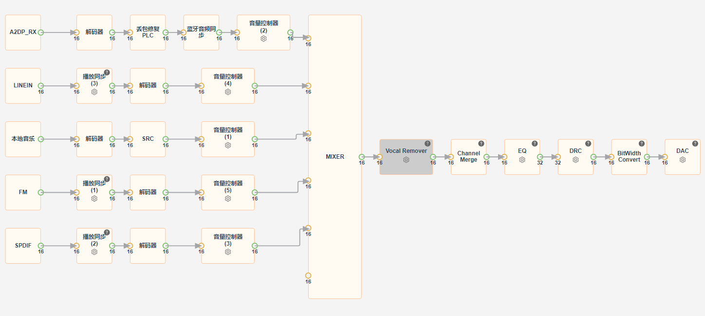
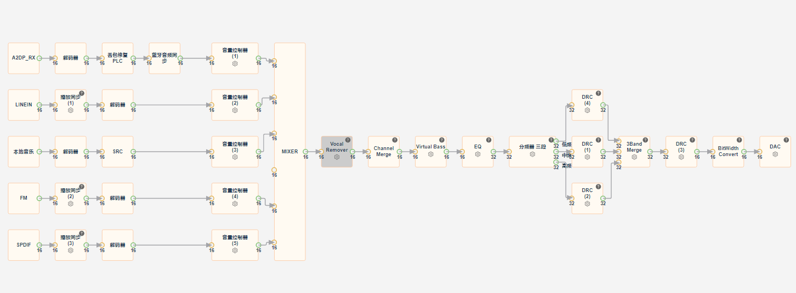
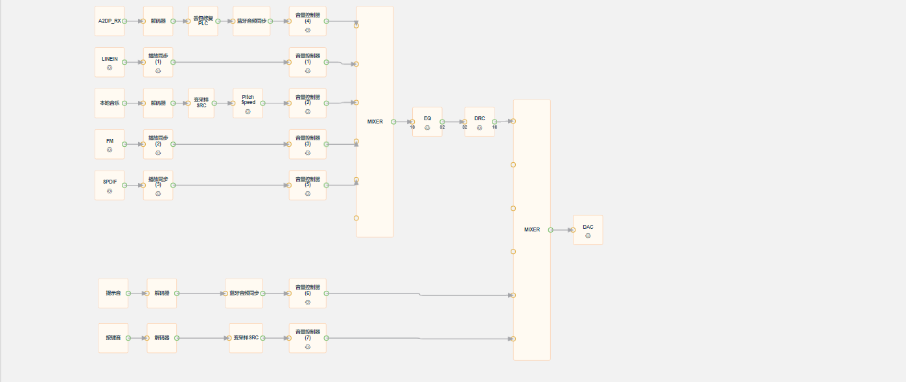
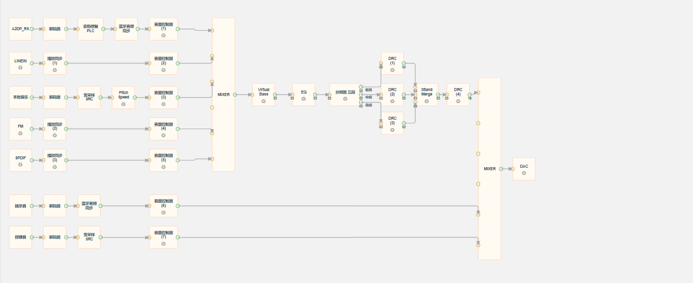
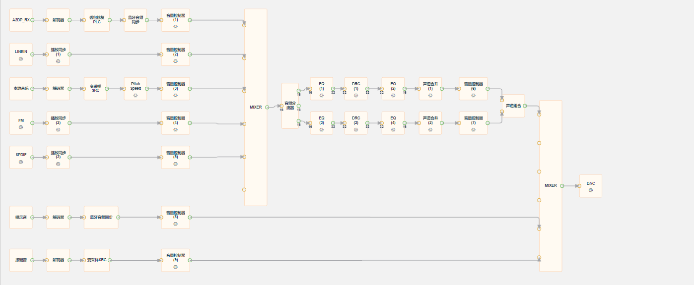
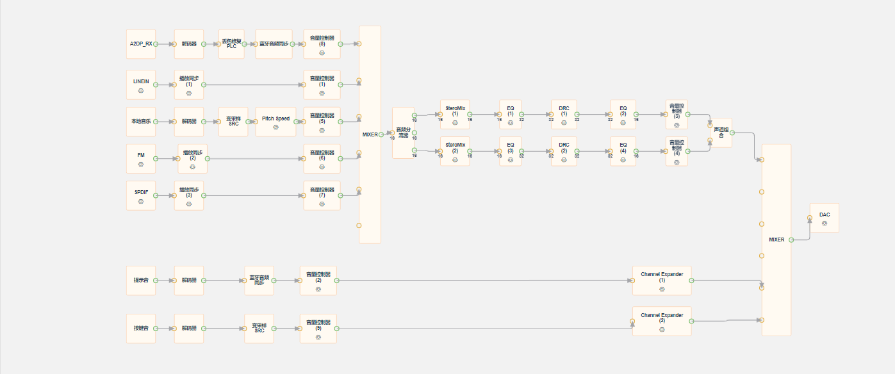
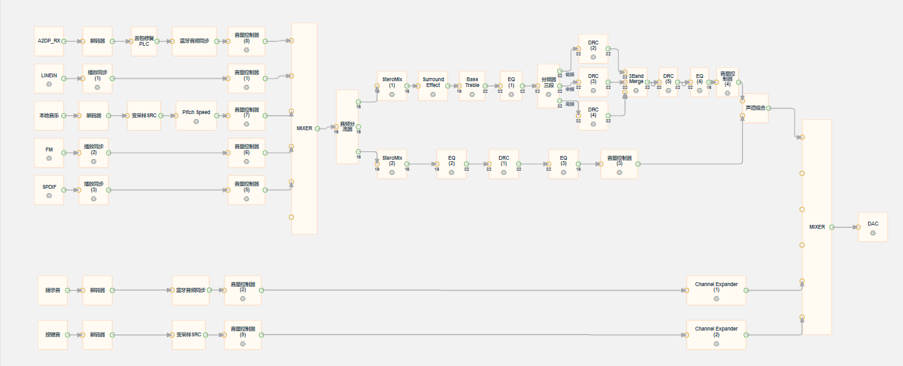

13.4. 媒体
13.4.1. 单声道
单声道需要将DAC配置为单左声道（DAC_OUTPUT_MONO_L），JL703N系列的DAC单声道输出目前仅支持左声道。
单声道
单声道pro

13.4.2. 立体声
立体声需要将DAC配置为双声道（DAC_OUTPUT_LR）
立体声
提供一个EQ，一个DRC作基础的音效调节。 立体声pro
添加vbass虚拟低音，对于某些低频缺失的喇叭/腔体，能够显著地提升低频表现力。将drc更换为多带drc，数据经过分频器的分频，可对数据的不同频段做不同的处理，实现低、中、高音分别对应不同的drc，并且在三路drc处理的数据合并后再经过一个全带drc，调试时具有更高的灵活性以及更好的效果，但相应的资源消耗也会更大。 
13.4.3. 1.1声道
1.1声道需要将DAC配置为双声道（DAC_OUTPUT_LR），左声道（L）作为全频喇叭，右声道（R）作为低音喇叭。
1.1_channel

13.4.4. 2.1声道
2.1声道需要将DAC配置为四声道（FRONT_LR_REAR_LR），FL/FR组成LR通路（全频音箱），RL/RR组成SW通路（低音音箱）。
蓝牙音乐、LINEIN模式、本地音乐、FM模式、SPDIF模式均内置了2.1声道流程。可通过场景切换功能切换不同音乐风格。
流程中串入三个音量控制器，分别控制总音量，LR通路音量，SW通路音量；可通过EQ、DRC、StereoMix等模块调试音效。
2.1_channel
2.1_channel_pro
添加高低音（可通过旋钮调节高/中/低频段增益）、环绕声模块，将drc更换为多带drc。 